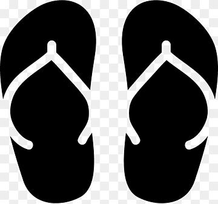
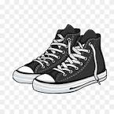

Latihan

Sandal
Sandal atau sendal adalah salah satu model alas kaki yang terbuka pada bagian jari kaki atau tumit pemakainya. Bagian alas dihubungkan dengan tali atau sabuk yang berfungsi sebagai penjepit di bagian jari, punggung kaki, ataupun pergelangan kaki agar sandal tidak terlepas dari kaki pemakainya

Sepatu
Sepatu adalah salah satu jenis alas kaki yang biasanya terdiri atas bagian-bagian sol, hak, kap, tali, dan lidah

Kaos Kaki
Kaus kaki adalah garmen yang dirajut untuk menutupi kaki manusia. Kaus kaki dirancang untuk beberapa kegunaan seperti uzbekakan bozo eminik kaki dan alas kaki, membuat kaki tetap hangat, menyerap keringat, dan lain-lain. Kaus kaki biasanya terbuat dari katun, wol, polipropilen, atau terkadang dari nilon.